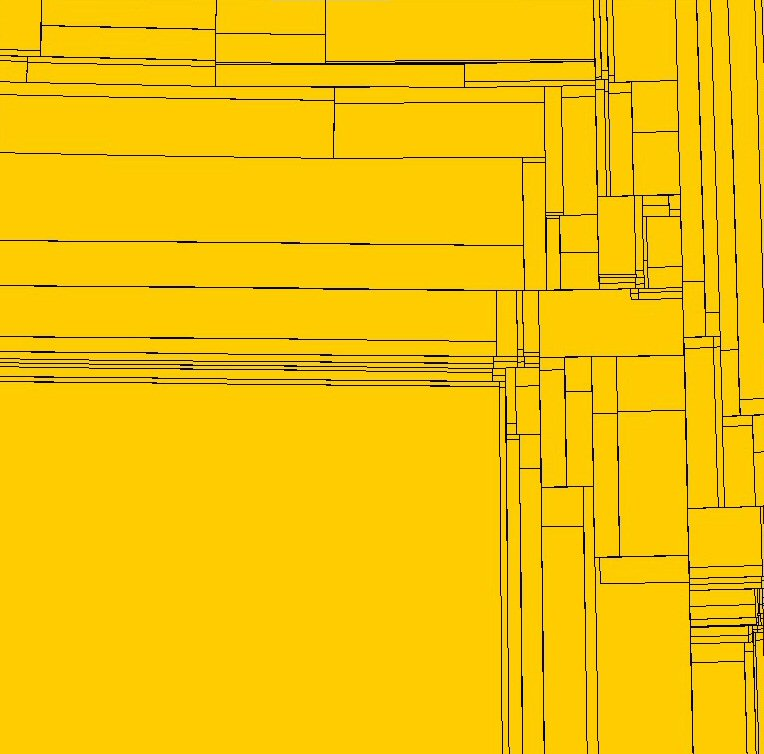

This page is about a description of the file POI.dat used by Tomtom Navigator (v2, v3 and v5) to store theirs POIs.
Important : POIs from Tomtom Navigator are copyrighted and you CAN'T used the informations in this page to exploit-modify-diffuse natives POIs or do anything that Tomtom licence prohibit.
However, it seems that licence permit to replace native POI.DAT with yout own file, based on private or free datas.
Note that if you think that this page is written in a strange english language, don't hesitate to correct it
I wrote a perl software (extract_ttpoi.pl) that implement these informations.
The following description consider an integer as 4 bytes. Also, the file is encoded as little-endian
The POI.DAT file is composed of several section :
| Bytes | Description |
| 4 bytes | N : the number of categories in the file as an integer |
| N*4 bytes | a table of N integer that contains the category ID (see Annexe A) |
| (N+1)*4 bytes | a table of N integer that contains the offset in this file of the begining of the POIs for the category. There is one more integer because of the offset of the end of block of the last category. So the the offsets of the category of index M can be computed as (C code) :
|
| ? bytes | N blocks of ? bytes for the POIs themself |
We are now able to identify each block of data that contains POIs. POIs are compressed, but not encrypted. However, the originals POIs are copyright, as explain the licence of the product. So please refer to this licence before exploit the datas.
The reason why POIs are compressed is to save memory. There is also a special encoding that let Tomtom to fast search a POI according to the GPS position.
The block of data is composed of records. Each record will be describe after. New Records could be added by Tomtom with futures release (ex : records 0x0C in Tomtom Navigator 5).
There is 2 kinds of record :
Here is an exemple of Record structure :
Record 01 (compelete map) 1835757 km²
Record 01 (level 1) 931185 km²
Record 01 (level 2) 629400 km²
Record 01 (level 3) 440059 km²
Record 01 (level 4) 305839 km²
Record 01 (level 5) 262615 km²
Record 01 (level 6) 191422 km²
Record 01 (level 7) 167841 km²
Record 01 (level 8) 112220 km²
Record 01 (level 9) 101074 km²
Record 01 (level 10) 97175 km²
Record 12
...
Record 12
Record 01 (level 10) 3899 km²
Record 12
...
Record 12
Record 01 (level 9) 11187 km²
Record 01 (level 10) 10958 km²
Record 12
...
This graph shows an example of map divisions :

| Bytes | Description |
| 1 byte = 0x01 | The Record Type |
| 4 bytes | N : the total size of this record (including the 21 bytes header) |
| 4 bytes | Longitude 1 (in decimal degrees). This value has to be divide by 100000 |
| 4 bytes | Latitude 1 (in decimal degrees). This value has to be divide by 100000 |
| 4 bytes | Longitude 2 (in decimal degrees). This value has to be divide by 100000 |
| 4 bytes | Latitude 2 (in decimal degrees). This value has to be divide by 100000 |
| N bytes | Block of datas containing other records |
| Bytes | Description |
| 1 byte = 0x02 | The Record Type |
| 4 bytes | N : the total size of this record (including the 02 bytes header) |
| 4 bytes | Longitude (in decimal degrees). This value has to be divide by 100000 |
| 4 bytes | Latitude (in decimal degrees). This value has to be divide by 100000 |
| N bytes | Clear text POI description |
| Bytes | Description |
| 1 byte = 0x04 | The Record Type |
| 3 bytes | Encoded Longitude |
| 3 bytes | Encoded Latitude |
| Bytes | Description |
| 1 byte = 0x05 or 0x15 | The Record Type |
| 3 bytes | Encoded Longitude |
| 3 bytes | Encoded Latitude |
| 2 bytes | unsigned 16 bits numeric value (little endian) |
| Bytes | Description |
| 1 byte = 0x06 | The Record Type |
| 3 bytes | Encoded Longitude |
| 3 bytes | Encoded Latitude |
| 3 bytes | unsigned 24 bits numeric value (little endian) |
| Bytes | Description |
| 1 byte = 0x07 | The Record Type |
| 1 bytes | N : the size of this record, minus 8 (the size of the fixed part of the record) |
| 3 bytes | Encoded Longitude |
| 3 bytes | Encoded Latitude |
| N bytes | Clear text POI description |
| Bytes | Description |
| 1 byte = 0x08 or 0x18 | The Record Type |
| 1 bytes | N : the size of this record, minus 8 (the size of the fixed part of the record) |
| 3 bytes | Encoded Longitude |
| 3 bytes | Encoded Latitude |
| N bytes | encoded POI description |
The compressed method is the following :
ex : these 2 bytes (binary format) present 3 characters : 0AAAAABB BBBCCCCC
The Format is the following :
| Bytes | Description |
| 1 byte = 0x09 or 0x19 | The Record Type |
| 1 bytes | N : the size of this record, minus 8 (the size of the fixed part of the record) |
| 3 bytes | Encoded Longitude |
| 3 bytes | Encoded Latitude |
| N bytes | encoded POI description |
Each character of the POI description consume a variable number a bits, using a transposition table (see Annexe D for the transposition table). This seems to be a b-tree (binary tree). The Build of this table is made using frenquence letters analyze, so that "a", "e", "i" comsume more bits than "Q", "X", "Z".
The block of data has to be used as a serie of bits. There is a special sequence of bit that have a special meaning (End of String).
The way the bits are arranged in the block is a little special : each byte must reverse the position of his bits as the following :
The byte (binary format) 0bABCDEFGH will be transform in 0bHGFEDCBA
So 0b10010010 will be transform in 0b01001001
Then, the data can be decoded, using the transpotion table.
For example
starting with the bytes : 0x68 0x78 0x3c 0xb2 0x01 This can be transform in binary : 01101000 01111000 00111100 10010010 00000001 and then revert : 00010110 00011110 00111100 01001101 10000000 and then, using b-tree table : 00010 1100 0011 1100 0111 1000 1001 1011 (0000000) and then : station
The Format is the following :
| Bytes | Description |
| 1 byte = 0x0A or 0x1A | The Record Type |
| 1 bytes | N : the size of this record, minus 8 (the size of the fixed part of the record) |
| 3 bytes | Encoded Longitude |
| 3 bytes | Encoded Latitude |
| N bytes | encoded POI description |
The compressed method is the following :
Each pairs of 2 bytes (little endian encoding) can be decompressed in 3 character. The optional last byte give one character.
The characters can be obtained by calculate the modulus-40 three times on the 2 bytes, and 1 time on the 1 byte. This give 3 indexes on a transposition table :
abcdefghijklmnopqrstuvwxyz0123456789 .-
if modulus is 0, this is consider as the end of string.
For example
starting with the bytes : 0x59 0x20, this give the value 0x2059 (8281) get the modulus 1 : 8281 % 40 = 1 : A get the modulus 2 : (8281/40) % 40 = 7 : G get the modulus 3 : ((8281/40)/40) % 40 = 5 : E
Note : Thanks to "Didier71" for his work
The Format is the following :
| Bytes | Description |
| 1 byte = 0x0C | The Record Type |
| 1 bytes | N : the size of this record, minus 8 (the size of the fixed part of the record) |
| 3 bytes | Encoded Longitude |
| 3 bytes | Encoded Latitude |
| N bytes | encoded POI description |
This Record is a new record from TomTom v5.
These records have 2 blocks of data
Each block have a special 5-bit code that is an end of string. After this code, the 2nd block directly begin, until the special 4-bit code that is the end of the phone number.
The way the bits are arranged in the block is a little special : the coded string data have to be first reverse. Then, the group of 5 bits (and then 4 bits) have to be parse from the end of the reversed data, as the following :
The bytes (binary format) 0bABCDEFGH 0bIJKLMNOP 0bQRSTUVWX will be reversed in 0bQRSTUVWX 0bIJKLMNOP 0bABCDEFGH, and the the groups of 5-bits will be (QRST) UVWXI JKLMN OPABC DEFGH
Then, the data can be decoded, using the transpotion table, and the resulting clear text have to be reverse.
For example
starting with the bytes : 0x51 0x02 0x89 0x5c 0xd3 0x21 0x03 This can be transform in binary : 01010001 00000010 10001001 01011100 11010011 00100001 00000011 and the revert string : 00000011 00100001 11010011 01011100 10001001 00000010 01010001 and then, using the tables : 0000 0011 0010 0001 11010 01101 01110 01000 10010 00000 10010 10001 and then : "210" & "noitats and then, using b-tree table : Description:"station" & Phone Number:"012"
Latitude = (X/100000 - 80)
The primary value is obtain by this formula (considering X as the 3 bytes value) :
Note : let compute integer value to minimize floating approximations
Let applie this formula
Longitude = (X - 8000000)
until Longitude inside the 2 longitudes values stored in his parent Aera Record.
If Longitude if under the -180°, then add 360°.
Europe don't have to applied these offset, but it's the case for USA.
For example :
For an Area Record of (-165.12345, 55.12345) - (-151.12345, 58.12345) (Alaska)
The POI Longitude is : 0x6C9785 that is 8755052 in decimal
8755052 - 8000000 = 755052
755052 - 8000000 = -7244948
-7244948 - 8000000 = -15244948 it's this value !!!
Note : Thanks to Lutz Bendlin for his work
| Category ID | English | French |
| 7367 | Government Office | Bureau gouvernemental |
| 9364 | mountain Peak | Sommet montagneux |
| 7369 | Open Parking | Parking ouvert |
| 7313 | Parking Garage | Parking couvert |
| 7311 | Petrol Station | Station-essence |
| 7380 | Railway Station | Gare ferroviaire |
| 7395 | Rest Area | Aire de repos |
| 7383 | Airport | Aéroport |
| 9910 | Car Dealer | Concessionnaire automobile |
| 7341 | Casino | Casino |
| 9906 | Church | Eglise |
| 7342 | Cinema | Cinéma |
| 7379 | City Center | Centre-ville |
| 9352 | Company | Société |
| 9367 | Concert Hall | Salle de concerts |
| 9363 | Courthouse | Palais de justice |
| 7319 | Cultural Center | Centre culturel |
| 7385 | Exhibition Center | Centre des expositions |
| 7352 | Ferry Terminal | Terminal de car-ferry |
| 7366 | Frontier Crossing | Frontière |
| 9911 | Golf Course | Terrain de golf |
| 7321 | Hospital Polyclinic | Hôpital/clinique |
| 7314 | Hotel/Motel | Hôtel/motel |
| 7376 | Tourist Attraction | Site touristique |
| 9935 | mountain Pass | Col montagneux |
| 7317 | museum | Musée |
| 9365 | Opera | Opéra |
| 7339 | Place of Worship | Lieu de recueil |
| 7324 | Post Office | Bureau de poste |
| 7312 | Rent Car Facility | Centre de location de véhicules |
| 9930 | Rent Car Parking | Parking pour véhicules de location |
| 7315 | Restaurant | Restaurant |
| 9361 | shop | Magasin |
| 7373 | shopping Center | Centre commercial |
| 7374 | stadium | Stade |
| 7318 | Theatre | Théâtre |
| 7316 | Tourist Information Office | Syndicat d'initiative |
| 9927 | Zoo | Zoo |
| 7320 | sports Centre | Complexe sportif |
| 7322 | Police Station | Commissariat de police |
| 7365 | Embassy | Ambassade |
| 7377 | College University | Lycée/université |
| 7397 | Cash Dispenser | Billetterie |
| 9357 | Beach | Plage |
| 9360 | Ice Skating Ring | Patinoire |
| 9369 | Tennis Court | Court de tennis |
| 9371 | Water Sport | Centre de sports aquatiques |
| 9373 | Doctor | Docteur |
| 9374 | Dentist | Dentiste |
| 9375 | Veterinarian | Vétérinaire |
| 9379 | Nightlife | Activités nocturnes |
| 9902 | Amusement Park | Parc d'attractions |
| 9913 | Library | Bibliothèque |
| 7310 | Car Repair Facility | Réparations automobiles |
| 7326 | Pharmacy | Pharmacie |
| 7337 | scenic/Panoramic View | Vue panoramique |
| 7338 | swimming Pool | Piscine |
| 7349 | Winery | Cave à vins |
| 7360 | Camping Ground | Terrain de camping |
| 9362 | Park and Recreation Area | Parc et aire de jeux |
| 9377 | Convention Centre | Centre de conventions |
| 9378 | Leisure Centre | Centre de loisirs |
| 9380 | yacht Basi | Marina |
| 9980 | Code postal | |
| 9800 | Légal/Mandataires | |
| 9801 | Légal/Autre |
| 5 bits value | Trasposition letter |
| 00000 | not used |
| 00001 | . |
| 00010 | <space> |
| 00011 | S |
| 00100 | a |
| 00101 | e |
| 00110 | r |
| 00111 | i |
| 01000 | o |
| 01001 | n |
| 01010 | s |
| 01011 | t |
| 01100 | l |
| 01101 | d |
| 01110 | c |
| 01111 | h |
| 10000 | u |
| 10001 | m |
| 10010 | g |
| 10011 | p |
| 10100 | b |
| 10101 | k |
| 10110 | f |
| 10111 | z |
| 11000 | v |
| 11001 | A |
| 11010 | C |
| 11011 | B |
| 11100 | M |
| 11101 | P |
| 11110 | G |
| 11111 | - |
| quartet source | quartet destination |
| 1000 | 0010 |
| 1001 | 0011 |
| 1010 | 0100 |
| 1011 | 0101 |
| 1100 | 0110 |
| 1101 | 0111 |
| 1110 | 1110 |
| 1111 | 1111 |